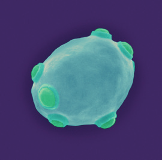
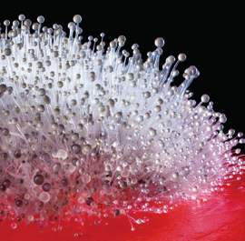
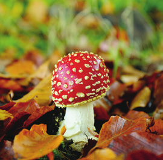
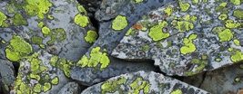
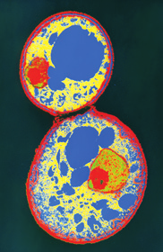
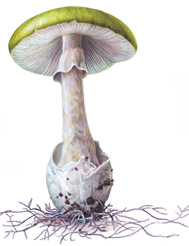

El reino hongos incluye organismos eucariotas heterótrofos que pueden ser unicelulares y pluricelulares y siempre son inmóviles. Sus células pueden poseer una pared celular parecida a la de las células vegetales, de composición variada, pero nunca presentan cloroplastos.
Las funciones vitales de los hongos
Su nutrición heterótrofa es muy variada. Pueden ser saprófitos, parásitos o simbióticos.
Su reproducción puede ser asexual, por gemación en los seres unicelulares y por esporas en el resto. La reproducción sexual también se da, unas veces con la formación de células sexuales y otras con la unión de hifas distintas y la posterior fusión de sus núcleos celulares.
Su relación incluye respuestas a estímulos, como la humedad y la presencia de sustancias disueltas en el medio, que pueden provocar un mayor o menor desarrollo de su cuerpo o estimular el inicio del proceso reproductor.
Levaduras

Vista microscópica de una levadura
Son unicelulares y tienen forma ovoides. Descomponen sustancias orgánicas complejas en otras simples mediante la fermentación.
Mohos

Vista de moho
Son organismos pluricelulares. Sus hifas crecen sobre materia orgánica (como restos de pan o fruta), descomponiéndola.
Hongos que forman setas

Hongo en hojas de otoño
Son pluricelulares y viven ocultos entre la hojarasca de los bosques, descomponiéndola. En otoño o primavera desarrollan las setas.
¿Cómo viven los hongos?
La mayoría de los hongos habitan sobre materia orgánica viva o muerta. Algunos se asocian en simbiosis con algas, formando los denominados líquenes que se desarrollan sobre troncos de árboles, rocas y tejados.

Líquenes en rocas

Vista microscópica de células

Ilustración de un hongo